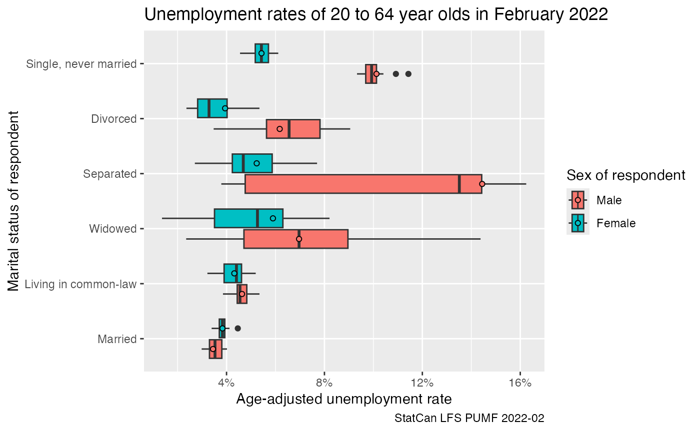

library(dplyr)
#>
#> Attaching package: 'dplyr'
#> The following objects are masked from 'package:stats':
#>
#> filter, lag
#> The following objects are masked from 'package:base':
#>
#> intersect, setdiff, setequal, union
library(tidyr)
library(ggplot2)
library(canpumf)
options(canpumf.cache_path = Sys.getenv("COMPILE_VIG_CANPUMF"))The LFS is one of the most-used PUMF series, since January 2021 the LFS PUMF is now easily available for direct download instead of needing to request it via EFT. This makes it very easy to integrate the LFS into reproducible workflows.
The canpumf package has two functions to facilitate
access to the LFS PUMF. The first lists all LFS pumf versions that are
available for direct download.
list_canpumf_collection() |>
filter(Acronym=="LFS")
#> # A tibble: 27 × 5
#> Title Acronym Version `Survey Number` url
#> <chr> <chr> <chr> <chr> <chr>
#> 1 Labour Force Survey LFS 2025-08 3701 https://www150.statcan.g…
#> 2 Labour Force Survey LFS 2025-07 3701 https://www150.statcan.g…
#> 3 Labour Force Survey LFS 2025-06 3701 https://www150.statcan.g…
#> 4 Labour Force Survey LFS 2025-05 3701 https://www150.statcan.g…
#> 5 Labour Force Survey LFS 2025-04 3701 https://www150.statcan.g…
#> 6 Labour Force Survey LFS 2025-03 3701 https://www150.statcan.g…
#> 7 Labour Force Survey LFS 2025-02 3701 https://www150.statcan.g…
#> 8 Labour Force Survey LFS 2025-01 3701 https://www150.statcan.g…
#> 9 Labour Force Survey LFS 2024 3701 https://www150.statcan.g…
#> 10 Labour Force Survey LFS 2023 3701 https://www150.statcan.g…
#> # ℹ 17 more rowsThe second one fetches and loads the LFS data. For example, to download the LFS pumf for 2022 we use
lfs_2022 <- get_pumf("LFS","2022")By default the data is stored in the temporary session path,
optionally we can set the canpumf.cache_path option to a
path to permanently cache the data.
To convert to human readable column lables and column names we use
the label_pumf_data function.
lfs_2022 <- lfs_2022 |> label_pumf_data() With this we can do some simple descriptive analysis. We could use
the add_bootstrap_weights function to add bootstrap wegihts
if desired. We focus in on February 2022 and add boodstrap weights. By
default this only adds 16 weights, for more serious applications we
would want to add more weights.
lfs_2022_02_data <- lfs_2022 |>
filter(`Survey month`=="February") |>
add_bootstrap_weights("Standard final weight",seed=42)For this vignette we look at gender-specific labour fource status statistics for the 20 to 64 year old population, computing age-adjusted rates to even out age-specific effects.
data <- lfs_2022_02_data %>%
filter(substr(`Five-year age group of respondent`,0,2) %in% seq(20,60,5)) %>%
filter(`Labour force status`!="Not in labour force") %>%
group_by(`Labour force status`,`Five-year age group of respondent`,`Sex of respondent`,
`Marital status of respondent`) %>%
summarise(across(matches("Standard final weight|BSW\\d+"),sum),.groups="drop") %>%
pivot_longer(matches("Standard final weight|BSW\\d+"),names_to="Weight",values_to="Count") %>%
group_by(`Five-year age group of respondent`,`Sex of respondent`,
`Marital status of respondent`, Weight) %>%
mutate(Share=ifelse(Count==0,0,Count/sum(Count))) %>%
ungroup()
data_age_adjusted <- data %>%
left_join((.) %>%
group_by(`Five-year age group of respondent`,`Sex of respondent`,Weight) %>%
summarize(Count=sum(Count),.groups="drop") %>%
group_by(`Sex of respondent`,Weight) %>%
mutate(P_age__sex=Count/sum(Count)) %>%
ungroup() %>%
select(`Sex of respondent`,`Five-year age group of respondent`,Weight,P_age__sex),
by=c("Sex of respondent","Five-year age group of respondent","Weight")) %>%
group_by(`Sex of respondent`,`Labour force status`,`Marital status of respondent`, Weight) %>%
summarise(age_adjusted=sum(Share*P_age__sex),.groups="drop")
data_age_adjusted %>%
filter(`Labour force status`=="Unemployed") %>%
ggplot(aes(x=age_adjusted, y=`Marital status of respondent`, fill=`Sex of respondent`)) +
geom_boxplot() +
geom_point(shape=21,data=~filter(.,Weight=="Standard final weight"),position=position_dodge(width=0.75)) +
scale_x_continuous(labels=scales::percent) +
labs(title="Unemployment rates of 20 to 64 year olds in February 2022",
x="Age-adjusted unemployment rate",
caption="StatCan LFS PUMF 2022-02")
data2 <- lfs_2022_02_data %>%
filter(substr(`Five-year age group of respondent`,0,2) %in% seq(20,60,5)) %>%
group_by(`Labour force status`,`Five-year age group of respondent`,`Sex of respondent`,
`Marital status of respondent`) %>%
summarise(across(matches("Standard final weight|BSW\\d+"),sum),.groups="drop") %>%
pivot_longer(matches("Standard final weight|BSW\\d+"),names_to="Weight",values_to="Count") %>%
group_by(`Five-year age group of respondent`,`Sex of respondent`,
`Marital status of respondent`, Weight) %>%
mutate(Share=ifelse(Count==0,0,Count/sum(Count))) %>%
ungroup()
data_age_adjusted2 <- data2 %>%
left_join((.) %>%
group_by(`Five-year age group of respondent`,`Sex of respondent`,Weight) %>%
summarize(Count=sum(Count),.groups="drop") %>%
group_by(`Sex of respondent`,Weight) %>%
mutate(P_age__sex=Count/sum(Count)) %>%
ungroup() %>%
select(`Sex of respondent`,`Five-year age group of respondent`,Weight,P_age__sex),
by=c("Sex of respondent","Five-year age group of respondent","Weight")) %>%
group_by(`Sex of respondent`,`Labour force status`,`Marital status of respondent`, Weight) %>%
summarise(age_adjusted=sum(Share*P_age__sex),.groups="drop")
data_age_adjusted2 %>%
filter(`Labour force status`=="Not in labour force") %>%
ggplot(aes(x=1-age_adjusted, y=`Marital status of respondent`, fill=`Sex of respondent`)) +
geom_boxplot() +
geom_point(shape=21,data=~filter(.,Weight=="Standard final weight"),position=position_dodge(width=0.75)) +
scale_x_continuous(labels=scales::percent) +
labs(title="Labour force participation rates of 20 to 64 year olds in February 2022",
x="Age-adjusted participation rate",
caption="StatCan LFS PUMF 2022-02")
data_age_adjusted2 %>%
filter(`Labour force status`=="Employed, at work") %>%
ggplot(aes(x=age_adjusted, y=`Marital status of respondent`, fill=`Sex of respondent`)) +
geom_boxplot() +
geom_point(shape=21,data=~filter(.,Weight=="Standard final weight"),position=position_dodge(width=0.75)) +
scale_x_continuous(labels=scales::percent) +
labs(title="Share of 20 to 64 year olds working in February 2022",
x="Age-adjusted share at work",
caption="StatCan LFS PUMF 2022-02")